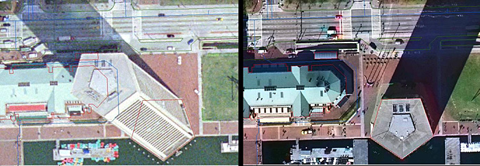
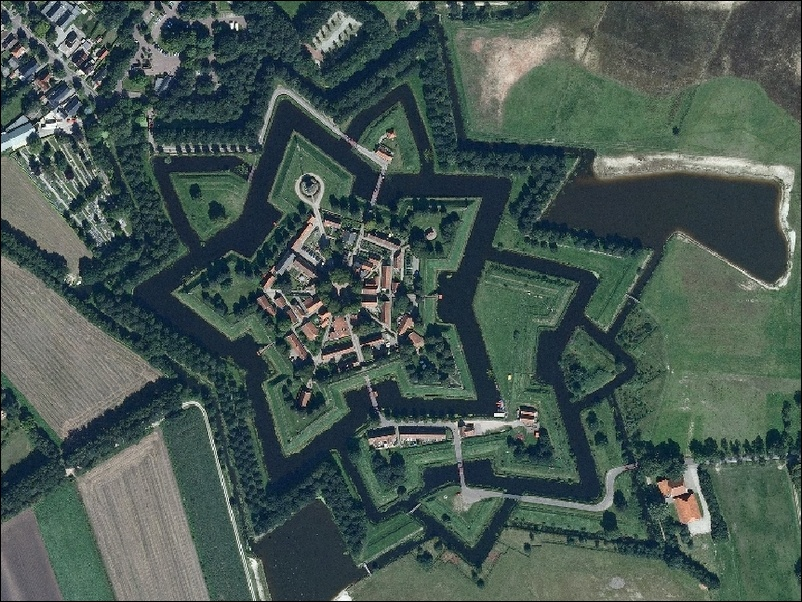
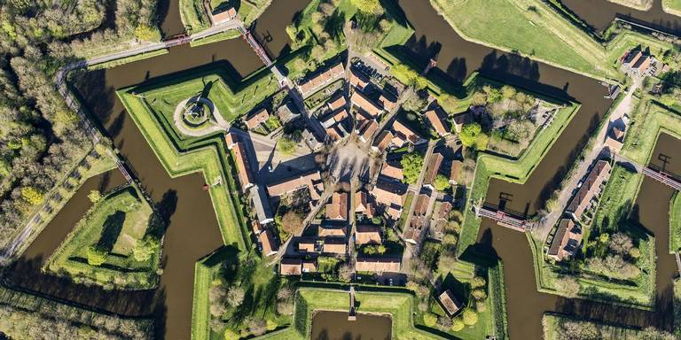
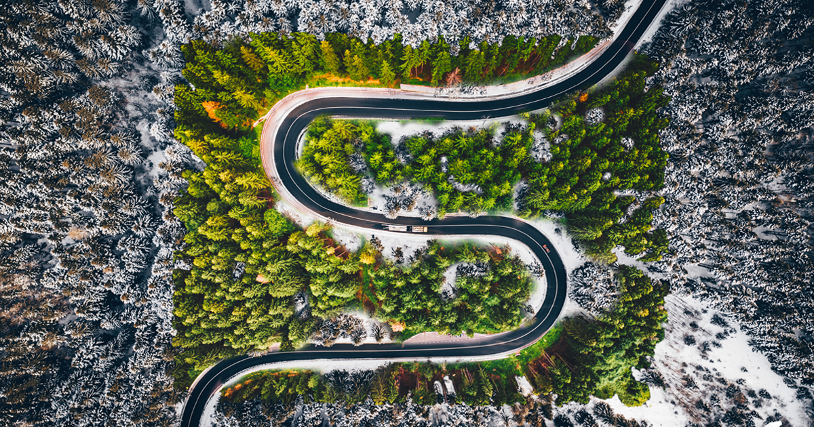
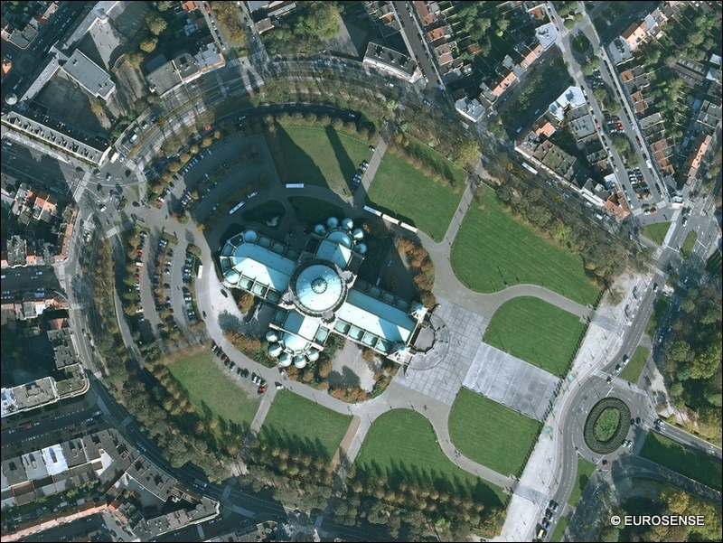

UAS imagery processing
GAPS
Justyna Jeziorska
Center for Geospatial Analytics
North Carolina State University
What will we learn?
- Why do we have to process the imagery?
- How to make 3D model out of 2D pictures?
- In action:
- a) making a 3D model of an item
- a) making a 3D model and an orthophoto out of our flight imagery
Aerial photography
San Francisco Earthquake, 1906: Note the high distortion

Geometry of aerial photograph


Orthorectification
Process that removes:
- geometric perspective,
- effects of relief displacement,
- optical distortions from the sensor
from a photograph or digital image


The resulting image - an orthophoto or orthoimage.
Orthorectification

Orthorectification

Orthorectification

Orthorectification

Orthorectification

Orthorectification

Orthorectification

UAS data processing outputs
What do we get after processing the data?

Orthophoto
- Photo that is geometrically corrected and has a uniform scale;
- Can be used to measure true horizontal distances (depending on cartographic projection and spatial extent)

Digital Surface Model

- DEM/DTM - Digital Elevation Model / Digital Terrain Model
- representation of a terrain's elevation
- bare-earth raster grid
- DSM - Digital Surface Model
- representation of a visible surface
- captures the natural and built features on the Earth’s surface
Orthophoto or aerial image?
Orthophoto or aerial image?
Orthophoto or aerial image?
Orthophoto or aerial image?
Orthophoto or aerial image?
Orthophoto or aerial image?
Orthophoto or aerial image?
Orthophoto or aerial image?


Structure from Motion (SfM)

Structure from Motion (SfM)

Structure from Motion (SfM)

Structure from Motion (SfM)

Structure from Motion (SfM)

Structure from Motion (SfM)

Structure from Motion (SfM)

Structure from Motion (SfM)

Structure from Motion (SfM)

Structure from Motion (SfM)

Structure from Motion (SfM)

Structure from Motion (SfM)

Structure from Motion (SfM)

Structure from Motion (SfM)

Structure from Motion (SfM)